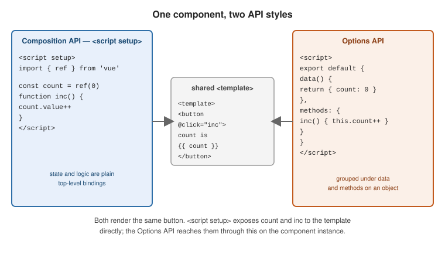

Getting Started
|
This content was generated with the assistance of AI and should be verified against the official documentation before being relied on in production. |
Vue is a JavaScript framework for building user interfaces on top of standard HTML, CSS and JavaScript. Its introduction describes it as a progressive framework: a small core you can drop into one part of an existing page, wrapped in optional official layers — routing, state, build tooling, server-side rendering — that you adopt only when a project needs them.
Declarative rendering and reactivity
Two features form the core. Declarative rendering extends HTML with a template syntax that describes markup as a function of JavaScript state. Reactivity tracks which state each render read, so Vue re-renders exactly the components that depend on a value when it changes — you mutate plain variables, not the DOM.
<script setup>
import { ref } from 'vue'
const count = ref(0)
</script>
<template>
<button @click="count++">count is {{ count }}</button>
</template>Clicking the button increments count; the text between the {{ }} interpolation delimiters updates on its
own. Reactivity Fundamentals covers ref() and the reactivity system in full, and
Template Syntax covers interpolation, directives and bindings.
Components and the single-file component
A Vue app is a tree of components — reusable instances that each own a piece of template, logic and style.
The idiomatic authoring format is the single-file component (SFC), a .vue file with up to three top-level
blocks:
<script setup>
// component logic -- imports, reactive state, functions
import { ref } from 'vue'
const name = ref('world')
</script>
<template>
<!-- markup, with access to everything declared above -->
<h1>Hello {{ name }}</h1>
</template>
<style scoped>
/* CSS; `scoped` limits these rules to this component */
h1 { color: teal; }
</style>SFCs are compiled by a build tool. See Single-File Components for the full block reference, and HTML & CSS Reference for the underlying HTML and CSS.
API styles
Vue components can be written in two API styles, both fully supported.
The Composition API — the default throughout this section — defines logic with imported functions such as
ref and computed. In an SFC it is used through <script setup>, where every top-level binding (imports,
variables, functions) is available directly in the template, with no return statement.
<script setup>
import { ref } from 'vue'
const count = ref(0)
function increment() {
count.value++
}
</script>
<template>
<button @click="increment">count is {{ count }}</button>
</template>The Options API describes a component as an object of options — data, methods, computed, watch,
lifecycle hooks — where this inside each option points at the component instance. It is built on the same
reactivity system underneath.
<script>
export default {
data() {
return { count: 0 }
},
methods: {
increment() {
this.count++
}
}
}
</script>
<template>
<button @click="increment">count is {{ count }}</button>
</template>
Neither style is deprecated. Choose the Composition API for larger apps and for extracting reusable logic into composables; the Options API stays convenient for small components and for teams coming from Vue 2. The Composition API FAQ compares them in detail.
Ways of using Vue
Vue scales down as well as up — see Ways of Using Vue.
No build step. Load Vue from a CDN as an ES module and call createApp. The root component’s setup
function returns the state its template uses:
<div id="app">{{ message }}</div>
<script type="module">
import { createApp, ref } from 'https://unpkg.com/vue@3/dist/vue.esm-browser.js'
createApp({
setup() {
return { message: ref('Hello Vue!') }
}
}).mount('#app')
</script>An import map lets the rest of your code use the bare specifier 'vue' without a bundler:
<script type="importmap">
{
"imports": {
"vue": "https://unpkg.com/vue@3/dist/vue.esm-browser.js"
}
}
</script>
<div id="app">{{ message }}</div>
<script type="module">
import { createApp, ref } from 'vue'
createApp({ setup: () => ({ message: ref('Hello!') }) }).mount('#app')
</script>Scaffold a project. For an SFC-based single-page app, create-vue generates a project wired to
Vite:
npm create vue@latestIt prompts for options (TypeScript, Vue Router, Pinia, testing, ESLint) and then:
cd <your-project>
npm install
npm run devQuick Start has the full walkthrough. For TypeScript in SFCs, see TypeScript Reference.
A framework. Nuxt builds on Vue to add file-based routing, server-side rendering and static generation, data-fetching conventions and a module ecosystem. Reach for it when you want those defaults rather than assembling them yourself.
The application instance
createApp creates an application instance. It receives the root component; app.mount renders it into a
container element and returns the root component instance.
import { createApp } from 'vue'
import App from './App.vue'
const app = createApp(App)
app.mount('#app')You can create more than one independent app on the same page — each has its own configuration and global registrations:
const header = createApp(Header)
header.mount('#site-header')
const widget = createApp(Widget)
widget.mount('#sidebar-widget')App-level configuration lives on app.config, and registrations (app.component, app.directive,
app.use for plugins) must happen before mount:
app.config.errorHandler = (err, instance, info) => {
// send to your reporting service
}
app.config.globalProperties.$formatDate = formatDate // reachable as this.$formatDate and in templatesCreating a Vue Application documents the instance, and
the Application API lists every app.* method.
From a single-file component to the DOM
A .vue file is not run as written. The build tool hands it to the SFC compiler
(@vue/compiler-sfc), which splits the blocks and emits plain JavaScript:
the <script setup> becomes a setup() function, and the <template> becomes a render function that builds a
tree of lightweight virtual nodes. At runtime the render function runs inside a reactive effect, so it is re-run — and the DOM patched — whenever state it read changes.
For the counter used earlier, the compiler’s output (development mode, trimmed) looks like this:
// the compiled <script setup>
export default {
__name: 'Counter',
setup(__props, { expose: __expose }) {
__expose()
const count = ref(0)
const __returned__ = { count, ref }
return __returned__
}
}
// the compiled <template>
export function render(_ctx, _cache, $props, $setup, $data, $options) {
return (_openBlock(), _createElementBlock("button", {
onClick: _cache[0] || (_cache[0] = $event => ($setup.count++))
}, "count is " + _toDisplayString($setup.count), 1 /* TEXT */))
}Three details are worth noticing. Every top-level binding of <script setup> is returned, which is how the template
reaches it as $setup.count. The click handler is cached in _cache so it is not recreated on each render. And the
trailing 1 /* TEXT */ is a patch flag: the compiler records that only the text of this element can change, so
the runtime skips diffing its attributes. In a production build the render function is inlined into setup(), but
the shape is the same. The SFC Playground’s JS tab shows this output for any component you type, and
Rendering, Render Functions, and Web Components explains the virtual DOM that this pipeline feeds.
Worked example: a todo list
The rest of this reference grows one small application — a todo list — so each page can show a feature in a
familiar setting. The first version is a single component that combines everything introduced so far: reactive
state with ref, derived state with computed, list rendering with v-for, two-way form binding with v-model,
and an event modifier.
<script setup>
import { ref, computed } from 'vue'
const draft = ref('')
const todos = ref([
{ id: 1, text: 'Read the guide', done: true },
{ id: 2, text: 'Build a todo list', done: false }
])
let nextId = 3
const remaining = computed(() => todos.value.filter((t) => !t.done).length)
function add() {
const text = draft.value.trim()
if (!text) return
todos.value.push({ id: nextId++, text, done: false })
draft.value = ''
}
</script>
<template>
<form @submit.prevent="add">
<input v-model="draft" placeholder="What needs doing?" />
<button>Add</button>
</form>
<ul>
<li v-for="todo in todos" :key="todo.id">
<label>
<input type="checkbox" v-model="todo.done" />
{{ todo.text }}
</label>
</li>
</ul>
<p>{{ remaining }} left</p>
</template>Nothing in the script touches the DOM. add() pushes to an array, v-model writes checkbox changes into
todo.done, and the remaining count updates because the computed getter read todo.done for every item. Mounting
this component with Vue Test Utils, typing a todo, submitting the form and ticking a box confirms exactly that: the
list grows to three items and the counter goes from 1 to 2 and back to 1. The later pages split this component up
(Components Basics), extract its logic (Composables) and test it
(Testing).
The SFC Playground
The SFC Playground compiles single-file components in the browser — no install — and shows the JavaScript that the SFC compiler emits. It is the quickest way to try an idea or to share a reproduction: the code is encoded in the URL, so a link carries the whole example.
See also
-
Template Syntax — interpolation, directives, and attribute, class and style bindings.
-
Reactivity Fundamentals —
ref(),reactive(), and how change tracking works. -
JavaScript Development and TypeScript Reference — the language Vue templates and components are written in.